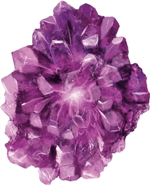

Psi Crystal
[ Cristal psi ]
Wondrous item, uncommon (requires attunement by a creature with an Intelligence score of 3 or higher)
This crystal grants you telepathy for as long as you remain attuned to it. See the introduction of the Monster Manual for rules on how this telepathy works. The crystal also glows with a purplish inner light while you are attuned to it. The higher your intelligence, the greater the light's intensity and the greater the range of the telepathy.
| Intelligence Score | Range of Telepathy | Light Intensity |
|---|---|---|
| 3-7 | 15 feet | Dim light out to a range of 5 feet |
| 8-11 | 30 feet | Bright light in a 5-foot radius and dim light for an additional 5 feet |
| 12-15 | 60 feet | Bright light in a 10-foot radius and dim light for an additional 10 feet |
| 16 or higher | 120 feet | Bright light in a 15-foot radius and dim light for an additional 15 feet |
Adventures (Rime of the Frostmaiden)
